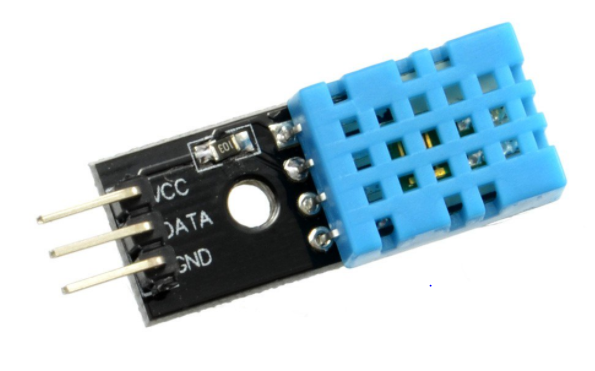

The DHT11 is a digital temperature and humidity sensor. It uses a humidity sensor and a thermistor to measure the surrounding air and gives a digital signal on the data pin
Specifications
Operating Voltage: 3.5V to 5.5VOperating current: 0.3mA (measuring) 60uA (standby)
Output: Serial data
Temperature Range: 0°C to 50°C
Humidity Range: 20% to 90%
Resolution: Temperature and Humidity both are 16-bit
Accuracy: ±1°C and ±1%

| On Sensor | On Raspberry | On Arduino |
|---|---|---|
| Vcc | Power supply 3.5V to 5V (pin 1 or 2) | Power supply 3.5V to 5V |
| Data | Serial data (pin 7) | Data pin (pin D2) |
| Ground(GND) | Ground (pin 6) | Ground (GND) |
It can be worked with
Working of DHT with Arduino Uno
#include "DHT.h"
#define DHTPIN 2 // Digital pin connected to the DHT sensor
#define DHTTYPE DHT11 // DHT 11
DHT dht(DHTPIN, DHTTYPE); // Initialize DHT sensor.
void setup() {
Serial.begin(9600);
dht.begin();
}
void loop() {
delay(2000); // Wait a few seconds between measurements.
float h = dht.readHumidity(); // Read temperature as Celsius (the default)
float t = dht.readTemperature(); // Read temperature as Fahrenheit (isFahrenheit = true)
// Check if any reads failed and exit early (to try again).
if (isnan(h) || isnan(t) || isnan(f)) {
Serial.println(F("Failed to read from DHT sensor!"));
return;
}
Serial.print(" Humidity: ");
Serial.print(h);
Serial.print("% Temperature: ");
Serial.print(t);
Serial.print(F("C "));
}
...
...